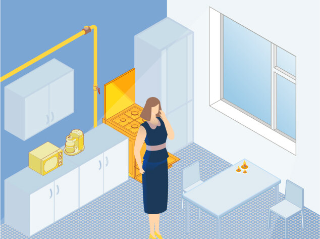
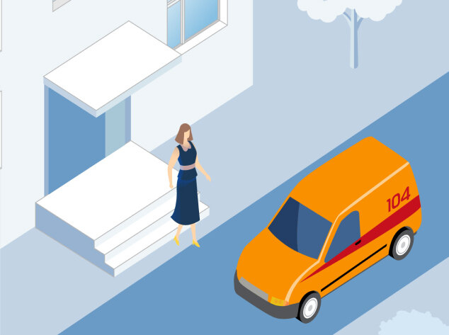

При запахе газа необходимо:
- Прекратить использование газовых приборов
- Перекрыть краны на опуске перед приборами и на самом приборе
- Погасить другие источники огня
- Открыть форточку (окно)
- Не включать и не выключать электрические приборы
- Покинуть загазованное помещение
- Вызвать газовую службу за пределами загазованного помещения по номеру 104
- Организовать у подъезда встречу аварийной бригады
Примерный инструктаж при поступлении аварийной заявки «запах газа в квартире»:

1. Прекратить использование газовых приборов
2. Перекрыть краны на опуске перед приборами и на самом приборe
3. Погасить другие источники огня
4. Открыть форточку (окно)
5. Не включать и не выключать электрические приборы
6. Покинуть загазованное помещение
7. Вызвать газовую службу за пределами загазованного помещения
по номеру 104

8. Организовать у подъезда встречу аварийной бригады